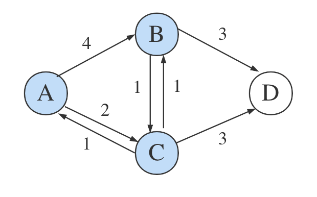

Saving Paths in Dijkstra Algorithm
In Layer 2 of blockchain, there’s a scaling solution called State Channels, where it’s necessary to find the nearest routing node.
Dijkstra Algorithm Concept
The Dijkstra algorithm solves the single-source shortest path problem. It only outputs the shortest distance from one point to other points. For example, in this graph with A as the starting point, we want to know the shortest distance to point D:

The Dijkstra algorithm is essentially a combination of dynamic programming and greedy strategy. To find the shortest path, traverse all nodes, updating the shortest distance records at each step. Once all nodes are visited, the shortest distances are finalized. The initial state set:
| A | B | C | D |
|---|---|---|---|
| 0 | - | - | - |
Currently at point A, the distance to itself is 0, and distances to other nodes are unknown.
From A, we can reach B and C with distances of 4 and 2 respectively. Update the state:
| A | B | C | D |
|---|---|---|---|
| 0 | - | - | - |
| 4 | [2] | - |
Brackets indicate the current shortest distance. Since C is closer, the next move is to C:

At point C, it can reach A, B, and D. Since A has already been visited, we define prev = []. Now with A and C visited: prev = [A, C].
At this point, the distance to B becomes 3 (A -> C -> B), shorter than the direct path. Update states and now D is reachable:
| A | B | C | D |
|---|---|---|---|
| 0 | - | - | - |
| 4 | [2] | - | |
| [3] | 5 |
B is closer than D, so the next move is to B:
Now prev = [A, C, B], and update:
| A | B | C | D |
|---|---|---|---|
| 0 | - | - | - |
| 4 | [2] | - | |
| [3] | 5 | ||
| [5] |
Only D is left:

prev = [A, C, B, D], all nodes visited. Final result:
| A | B | C | D |
|---|---|---|---|
| 0 | 3 | 2 | 5 |
We now know the shortest distance from A to D is 5.
Tracking the Shortest Path
The algorithm yields shortest distances, but what if we also want the exact path, like A -> D?
Forward Greedy Approach
We can infer A -> C -> D is the shortest path. The prev list is [A, C, B, D]. Since going through B to D is longer, B is excluded.
We might consider excluding any node unless:
- It can reach D,
- Going through it gives the shortest distance to D.
Only when both are true, we keep the node. For instance, if B is selected but doesn’t meet the criteria, it’s removed from path = [A, C, B] back to path = [A, C]. If E is selected next and fails, again it’s excluded. Until D is selected.
This works in complex scenarios:


However, this breaks in cases like:

If the shortest path is [A, E, C, D], and E can’t directly reach D, it gets wrongly excluded. Removing the “can reach D” condition causes other problems.
The forward greedy approach fails because we can’t determine if a node belongs to the final path during traversal.
Reverse Greedy Approach
Once D is selected as the current shortest node, the full shortest distance from A to D is determined. If we know where D came from (e.g., C), and where C came from (e.g., A), we can reconstruct the path backward.
We need a way to track predecessors during traversal. This approach is common in DFS or tree traversals.
Is maintaining distance in DFS equivalent to Dijkstra? No.
Recursion vs Tail Recursion
Dijkstra is usually written in loops:
for {
}
Or as tail recursion:
func recursion() {
recursion()
}
It’s a one-way loop. Full recursion like:
func recursion() {
for {
recursion()
}
}
might enter multiple branches at once to find the best one. At C, we might explore both C -> B -> D and C -> D, keeping only the better path.
But where to branch? C? B? A? If every node branches, it creates massive overhead. Trees allow this since nodes don’t overlap.
Second Dynamic Programming
The first DP maintains distance data. The second maintains path states:
pathList = {
A: [],
B: [],
C: [],
D: []
}
At the start, A can reach B and C:
pathList = {
A: [A],
B: [A, B],
C: [A, C],
D: []
}
After moving to C, since A -> C -> B is shorter than A -> B, update pathList[C].push(B). Also update D path.
pathList = {
A: [A],
B: [A, C, B],
C: [A, C],
D: [A, C, D]
}
In this round, B is chosen, but A -> C -> B -> D is longer than A -> C -> D, so don’t update pathList.
Upon reaching D, traversal ends.
The result path is A -> C -> D.
Can we save only the path to D? No, because updates to other nodes rely on current node paths. Path state must be complete.
Tracking Non-Shortest Paths
Dijkstra is greedy and always picks the nearest node. If we need to store non-shortest paths, it’s possible but not ideal. DFS/BFS is better suited.
Supplement (2025.05.11)
This Dijkstra-related work was originally part of a State Channels project called pylons, used to find the shortest path among multiple channels. Initially, it used DFS, but later I added a Dijkstra implementation, which included a blacklist feature and used transaction fees as the basis for path distance calculation.
Now, the routing portion of the code has been split out into a separate repository: smallyunet/dijkstra-demo as a memento.